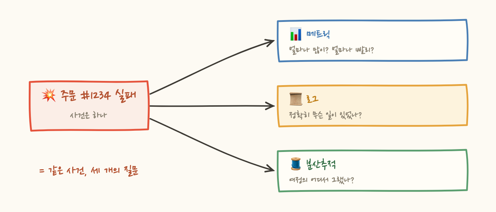
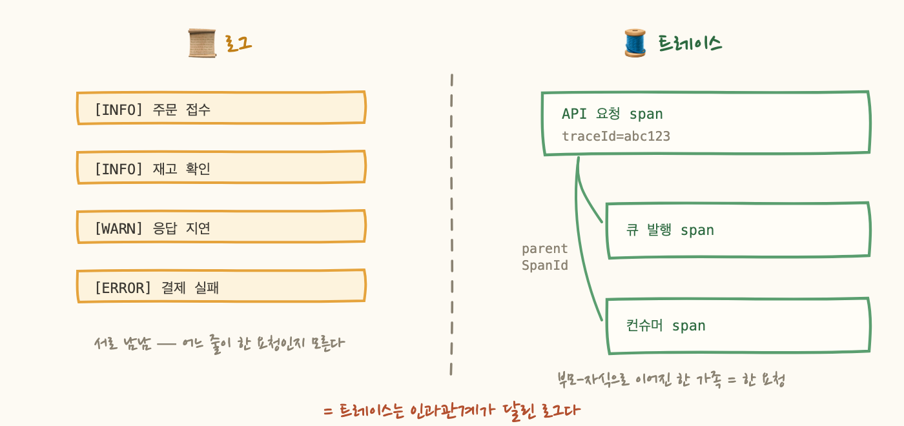
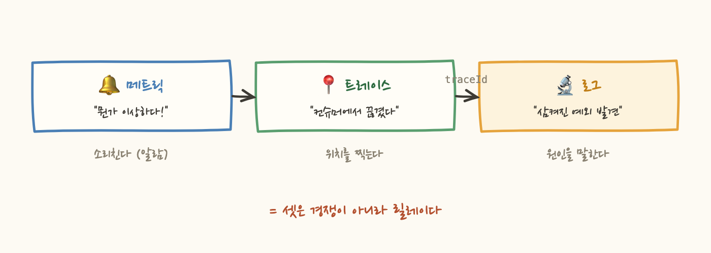

고객 문의가 하나 들어옵니다. "어제 오후 3시쯤 결제가 안 됐어요." 별로 겁나지 않아요. 우리 시스템은 하루에 로그를 수십 GB씩 쌓고 있으니까요. 검색창을 열고 자신 있게 키워드를 넣습니다. 그리고 30분 뒤 — 여러분은 여섯 개 서비스의 로그를 여섯 개 탭에 띄워놓고, 어느 줄과 어느 줄이 같은 요청인지 타임스탬프로 짜맞추는 수공업을 하고 있습니다.
이상하죠. 기록은 이렇게 많은데 왜 아무것도 알 수 없을까요? 이 글은 그 질문에서 시작합니다 — 많이 기록하는 것과 관찰 가능한 것은 왜 다른가.
관찰 가능성(observability)이라는 말이 유행하면서 모니터링과 뒤섞여 쓰이지만, 둘은 답하려는 질문이 달라요. 모니터링은 "지금 시스템이 아픈가?"를 묻습니다. 가용성의 질문이죠. CPU가 높은가, 에러율이 임계치를 넘었나 — 미리 정해둔 지표를 지켜보다가 종을 울리는 일이에요. 그런데 종이 울린 다음이 문제입니다. "왜 아픈가?" — 이건 디버그 가능성의 질문이고, 미리 정해둔 지표만으로는 답할 수 없어요. 장애는 늘 예상 못 한 모양으로 오니까요.
그래서 관찰 가능성은 도구 목록이 아니라 시스템의 성질입니다. 미리 예상하지 못한 질문에도 시스템 바깥의 기록만으로 답할 수 있는가 — 이게 기준이에요. 어제 3시의 그 결제처럼, 어떤 질문이 올지 모르는 상태에서요. 그리고 이 성질을 만들기 위해 우리가 수집하는 신호가 셋 있습니다. 로그, 메트릭, 분산추적이에요.
셋을 "종류가 다른 데이터"로 외우면 계속 헷갈려요. 그보다는 이렇게 보는 게 정확합니다 — 같은 사건 하나를, 서로 다른 질문에 답하려고 세 가지 모양으로 기록하는 것. 주문 하나가 실패한 순간을 세 신호가 각자 어떻게 남기는지 보세요:
핵심 차이는 개별 사건을 버리느냐예요. 메트릭은 "오늘 412건 실패"만 남기고 어느 주문이었는지는 버립니다. 그래서 압도적으로 싸고, 전수 집계라 알람을 걸기에 좋아요. 로그는 사건을 하나하나 다 남깁니다. 그래서 비싸고, 대신 원인을 말해줄 수 있죠. 트레이스는 하나의 요청에 속한 사건들을 인과관계로 묶어서 남겨요. 그래서 "어디서"를 답할 수 있고요.

공부하다 보면 반드시 이 의심이 들어요. 트레이스를 이루는 span 하나를 뜯어보면 더 그렇습니다:
타임스탬프 있고, 서비스명 있고, 속성 있고 — 맞아요, 구조화된 로그 한 줄과 거의 똑같이 생겼어요. 그 직감은 틀린 게 아닙니다. 차이는 딱 한 줄, parentSpanId예요. 로그는 서로 남남인 줄들의 나열이라, 여섯 서비스의 로그를 다 모아도 "이 줄과 저 줄이 같은 요청"인지 알 수 없어요. 그래서 옛날엔 요청마다 correlation ID를 만들어 모든 로그에 심고, 장애가 나면 그 ID로 여섯 시스템을 grep으로 이어붙였죠 — 도입부의 그 수공업이요.
분산추적은 그 수공업을 제품화한 것입니다. ID 전파를 자동으로 하고(traceparent 헤더), 부모-자식 관계를 기록해서, grep 대신 폭포수 그림을 그려주는 것. 그러니 "트레이스 = 인과관계가 달린 로그의 특수형"으로 이해하면 정확해요.

세 신호는 겹칠 수 있어요. 요청 하나의 latency를 메트릭 히스토그램에도, 로그 필드에도, span의 duration에도 남길 수 있죠 — 같은 정보를 세 번 저장하고 세 번 과금당하는 겁니다. 책들이 "중복 없이 설계하라"고 말하는 이유예요. 분업의 기준은 각자의 비용 구조입니다.
메트릭은 개별을 버리는 대가로 싸요. 그래서 전수로 세는 일은 전부 메트릭에게 줍니다 — 알람의 근거가 되는 숫자들이요. 로그는 다 남기는 대가로 비싸요. 그래서 원인을 말해주는 상세(스택트레이스, 에러 문맥)만 맡깁니다. 트레이스는 그 중간에서 여정의 구조를 맡고, 대량 트래픽에선 샘플링으로 비용을 조절하고요.
이렇게 분업해두면 장애 대응에서 셋은 경쟁이 아니라 릴레이로 움직여요. 순서까지 정해져 있습니다. 메트릭이 소리치고 → 트레이스가 위치를 찍고 → 로그가 원인을 말한다. 알람은 전수 집계인 메트릭이 울리고, 트레이스를 열어 여정의 어느 구간에서 끊겼는지 좁히고, 그 구간의 로그에서 삼켜진 예외를 찾아내는 거죠.
도입부의 그 문의로 돌아가볼까요. grep 지옥이었던 이유는 기록이 부족해서가 아니라 로그만 있었기 때문이에요. 요청에 traceId 하나만 있었다면 — 그 ID로 여정 전체를 한 화면에 띄우고, 끊긴 구간의 로그로 바로 점프했을 겁니다. 30분의 수공업이 클릭 두 번이 되는 차이예요.
